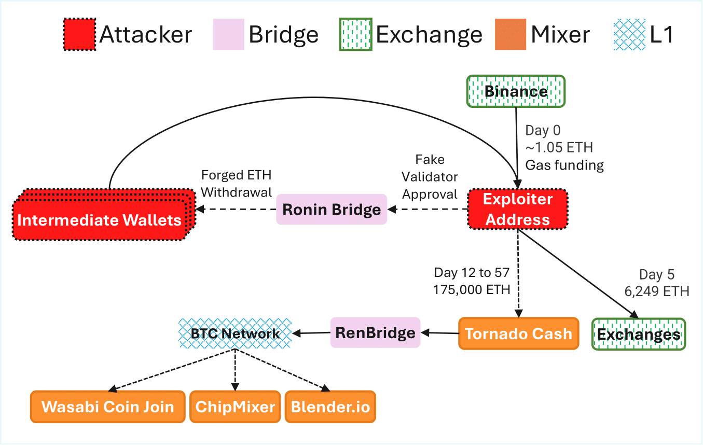
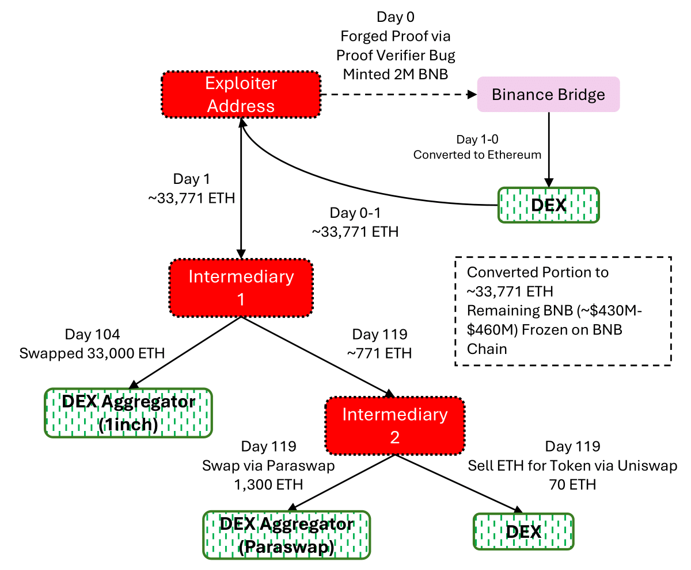

SoK: Patterns, Vulnerabilities, and Defenses in Blockchain Bridge Architectures
Experiment · Analysis · Benchmark
Authors: Anonymous
Abstract
Blockchain bridges have become essential infrastructure for enabling interoperability across different blockchain networks,
with more than $24B monthly bridge transaction volume. However, their growing adoption has been accompanied by a
disproportionate rise in security breaches, making them the single largest source of financial loss in Web3. For cross-chain
ecosystems to be robust and sustainable, it is essential to understand and address these vulnerabilities. In this study,
we present a comprehensive systematization of blockchain bridge design and security. We define three bridge security priors,
formalize the architectural structure of 13 prominent bridges, and identify 23 attack vectors grounded in real-world blockchain
exploits. Using this foundation, we evaluate 43 representative attack scenarios and introduce a layered threat model that
captures security failures across source chain, off-chain, and destination chain components.
Our analysis at the static code and transaction network levels reveals recurring design flaws, particularly in access control,
validator trust assumptions, and verification logic, and identifies key patterns in adversarial behavior based on
transaction-level traces. To support future development, we propose a decision framework for bridge architecture design,
along with defense mechanisms such as layered validation and circuit breakers. This work provides a data-driven foundation
for evaluating bridge security and lays the groundwork for standardizing resilient cross-chain infrastructure.
Highlights (TL;DR)
Scope
• Formal model of bridges (source/off-chain/destination)
• 23 attack vectors grouped by layer
• 43 exploits analyzed with on-chain traces
• Trust-minimized verification where possible
• Independent checks for proofs/signatures
• Operational safeguards: circuit breakers, limits
Contributions
We formalize a layered model of blockchain bridge architectures and define core security priors relevant to cross-chain behavior.
We develop a vulnerability taxonomy and introduce a formal notion of bridge attack surfaces based on trust assumptions and implementation details.
We perform the first large-scale static analysis of deployed bridge contracts, quantifying security patterns across access controls, call structures, and guard mechanisms.
We extract and analyze transaction-level behavior from bridge exploit incidents, identifying behavioral patterns across phases of use, compromise, and fund laundering.
We provide security benchmarks and design recommendations to guide future bridge development, formal analysis, and regulatory evaluation.
Selected Findings
Blockchain bridges have become indispensable infrastructure for cross-chain interoperability, yet they remain among the most vulnerable components of the decentralized ecosystem. Our study presents the first comprehensive, data-driven systematization of bridge security, combining formal modeling, large-scale static analysis, and empirical transaction-level investigations. We show that the majority of bridge attacks violate core security priors, particularly causality and consistency, without breaching the value peg itself.
Our analysis reveals that most successful exploits stem from two dominant classes: off-chain trust failures and on-chain validation bugs. These vectors frequently exhibit high damage-to-effort ratios, which we formalize through the der(V) metric. We also find that architectural design plays a decisive role in resilience. Trustless models, such as light-client and rollup-native bridges, have so far withstood real-world adversarial conditions, while trusted and loosely trust-minimized bridges remain disproportionately vulnerable. Emerging defense mechanisms like circuit breakers, buffer delays, and hybrid validation schemes offer promise but are inconsistently implemented and lack formal standardization.
Finally, we identify critical gaps in real-time detection and mitigation. Despite billions in locked value, most bridges lack robust monitoring infrastructure or containment protocols, and responses to attacks are often delayed and improvised. Bridging this gap will require new research into on-chain anomaly detection, decentralized fail-safe mechanisms, and benchmarking frameworks that account for detection latency and systemic risk.
This section compiles detailed visual summaries of major cross-chain bridge exploits.
Each case study illustrates the mechanics of the attack, the sequence of fund movements,
and the vulnerabilities that were exploited. The figures are paired with concise explanations
that trace weaknesses in validator configurations, message verification, contract logic,
and operational key management. Together, these examples highlight recurring failure modes
and extract practical security lessons for the design of resilient bridge protocols.
Ronin Bridge — Validator Key Compromise

Validator quorum compromised; forged messages authorized large releases and rapid laundering.
Attackers controlled a supermajority of validators and approved fraudulent messages that destination contracts trusted.
Concentrated signer sets and weak key operations turned a single compromise into a catastrophic drain.
Key points
Root cause: Majority validator key compromise.
Failure mode: Off-chain quorum accepted forged messages.
Attestation verification weakness permitted unbacked minting on destination chain.
A validation flaw allowed crafted messages to pass guardian signature checks, enabling mints without causal source-chain locks.
Small verification bugs in cross-chain proofs can have outsized impact.
Misconfigured state caused universal message acceptance; copy-paste draining ensued.
A deployment error made messages appear valid by default. Once public, many addresses replicated the same draining
transaction template, turning the exploit into a mass event.
Replaced public key / privileged path enabled forged transfers across chains (~$611M).
Complex privilege and upgrade paths were exploitable. Weak signer assurance and role design enabled actions intended
only for governance/maintenance to move funds across chains.
Key points
Root cause: Over-privileged roles and upgrade hooks.
Signals: Admin-like calls preceding large releases.
Mitigations: Least privilege, timelocks, multi-step governance, audited upgrade playbooks.
Binance Bridge — Proof/Verification Weakness

Manipulated proof path triggered unauthorized minting on the destination side.
Crafted messages passed verification and minted assets without corresponding source-chain events, underscoring the need
for robust proof formats and replay-safe verification.
Complex cross-chain swaps/routing exposed logic enabling drain in edge cases.
Crafted transactions exploited routing/swap logic to extract value beyond intended accounting, highlighting risks in
integrating AMM-style flows with cross-chain accounting.
Key points
Root cause: Swap/routing logic errors and weak external input validation.
Mitigations: Defense-in-depth checks, sandboxed routing, anomaly detection on pool movements.